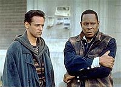
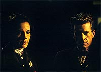
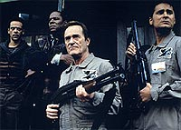
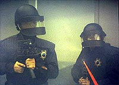
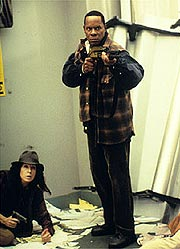

MANCHETE
DO EPISDIO
Apesar
das boas caracterizaes, a
premissa tcnica cobrou seu preo
Episdio
anterior | Prximo
episdio
Sinopse:
Data Estelar:
desconhecida.
Assumindo a identidade de Gabriel
Bell e a guarda dos refns no centro de triagem do "Bairro
Santurio - A" no ano de 2024 em So Francisco, Sisko (com
a ajuda de Bashir) tem que controlar a situao, especialmente
os volteis "B.C" (um "Bruto" que matou o
"verdadeiro" Gabriel Bell anteriormente) e Vin (um
segurana do local que foi feito refm tambm). A Guarda
Nacional j cercou as imediaes e posicionou atiradores de
elite nos prdios vizinhos e uma crescente tenso toma conta de
todos. Do lado de fora Jadzia assiste ao noticirio e decide ir
at o "santurio". No futuro, Kira e O'Brien comeam
a fazer uma srie de incurses ao passado para resgatar os
oficiais perdidos, apesar de saberem que o seu suprimento de partculas
cronitrnicas modificadas no vai durar muito.

Sisko
convence Webb (um tpico "homem de famlia" dentre os
residentes) a entrar na internet e dar a sua verso da histria.
O acesso rapidamente cortado e uma certa detetive Preston (a
negociadora da polcia de So Francisco) pede para se encontrar
pessoalmente com Webb e "Bell". Quando do encontro, eles
exigem o fechamento dos "santurios" e a reedio do
"Ato Federal de Emprego". Mais tarde, Preston retorna
com a resposta do governador: "Bell", Webb e os outros
"residentes revoltosos" teriam suas acusaes
reduzidas se os refns fossem libertados e nada mais (uma comisso
seria instaurada para avaliar as condies de vida nos
"santurios", mas nada seria feito de imediato). Webb
rejeita a oferta.
Dax consegue entrar no "santurio" pelos esgotos e se
encontrar com "Bell" e Bashir no centro de triagem,
apesar de ter o seu comunicador roubado por um "Lento"
de nome Grady. Bashir a ajuda a recobrar o comunicador e volta
para falar com Brynner, para permitir o acesso a internet via o
"canal" do milionrio para os residentes do "santurio".
Ele relutantemente acaba aceitando e com isso vrios residentes
(entre eles um certo Henry Garcia) contam a sua histria para
milhes de espectadores. Entretanto, o governador no se
sensibiliza e, com os crescentes rumores que os refns j
estariam mortos (alm de notcias de revoltas em outros
"santurios" tambm), manda Preston dar ordem para a
Guarda Nacional invadir o "Santurio". Assim ela faz.
O'Brien e Kira encontram a poca certa e contatam Dax via
comunicador e os trs vo se encontrar no ponto de descida
(Bashir e Sisko j estavam cientes disso). Finalmente um esquadro
da S.W.A.T. entra fora no centro de triagem e
"Bell" e os outros residentes tentam de toda maneira
evitar que os refns sejam feridos sob o fogo cerrado.
"B.C." e Webb e muitos outros morrem dentro do centro.
Sisko leva um tiro no ombro, salvando a vida de Vin. O chefe da
S.W.A.T. deixa Sisko e Bashir sob os cuidados de Vin e Bernardo.
Vin, muito grato, deixa os dois partirem colocando seus cartes
de identificao em dois dos muitos corpos (centenas deles)
espalhados pelo "santurio". Vin tambm promete que
vai contar a todos sobre o ocorrido naquele dia.

No
futuro a linha de tempo restaurada e todos esto a bordo da
Defiant. Bashir vai aos aposentos do comandante e mostra a ele uma
foto de Sisko como Gabriel Bell nos registros histricos
oficiais. O mdico pergunta como os humanos do sculo 21 puderam
deixar as coisas chegar a este ponto e Sisko diz que gostaria de
ter uma resposta para isso.
Comentrios:
Ter que resolver a problemtica trama temporal iniciada na parte
anterior e trazer em seu bojo uma histria de refns bastante
convencional prejudicam o episdio, mas o grande defeito do
segmento chega no seu final em que revelado que o futuro foi
formalmente alterado com direito a uma foto de Sisko, como Gabriel
Bell, no arquivo. Ainda que o episdio se sustente com excelentes
caracterizaes e atuaes, ele um claro "tombo"
com relao primeira parte. Mais detalhes, sem ter que ser
atingido por um tiro da Guarda Nacional no processo, nas linhas
abaixo.
Uma melhor resoluo para a presente histria seria uma
confirmao no final de que Sisko era Bell o tempo todo. Em vez
disso temos uma "semibrincadeira" que deixa a descoberto
(de forma absolutamente desnecessria) certos pontos da histria.
Pontos em que surge a dvida se uma alterao da linha do tempo
estava se dando ou no (um erro absolutamente primrio do
roteiro). O mais engraado que no fica nem claro em que
momento que a foto de Sisko (como Bell) foi tirada.

Bashir
ajudando Lee (talvez salvando a sua vida) uma coisa menor, uma
vez que Sisko j havia dito que todos os refns sobrevivem.
Entretanto, interessante notar que Sisko no fez objeo
alguma, ao contrrio da primeira parte, quando Bashir se ofereceu
para ajudar Danny Webb.
Ignorando o final, no fica difcil assumir que todos os
personagens envolvidos assim o estiveram sempre. Sisko disse que
os residentes tiveram acesso rede e sem a ajuda de algum
externo isso nunca teria sido possvel (e a utilizao da prpria
Dax para o fazer o trabalho na rede seria insatisfatria --ela
uma cientista, no uma mgica). natural aceitar tambm que
Sisko conhecia os acontecimentos por alto, mas no tinha absoluta
certeza de todos os detalhes finos do conflito, uma vez que o
governo da poca deve ter feito de tudo para ocultar os
acontecimentos e os nomes das pessoas envolvidas (o que obviamente
no serviu para encobrir o ocorrido, mas provavelmente serviu
para tornar um pouco "nublado" o incidente --talvez a
principal fonte de informao tenha sido o prprio Vin, o nico
com real coragem dentre todos os refns).
interessante a maneira com que Sisko se "transformou em
Bell", por vezes confundindo a humanidade dos sculos 24 e
21, em seus aspectos mais bsicos, um tema importante do episdio.
O delicado equilbrio entre Sisko, "B.C" e Vin foi
bastante interessante tambm, tornando a situao dentro do
centro de triagem bastante vivida. Bashir funcionou bem como um
fiel escudeiro de Sisko e teve uma das melhores cenas de todo episdio
com Lee. Dax foi sempre mais esperta e fez Brynner de gato e
sapato (ainda que para uma boa causa sempre).

O
ngulo do resgate por parte de Kira e O'Brien foi obviamente um
ponto fraco do episdio, as cenas no passado no foram to
divertidas assim (para dizer o mnimo) e o padro de busca
parece excessivamente tolo com o chefe "chutando" uma
nova poca, mesmo j tendo disponveis informaes de visitas
anteriores (o disfarce da bandagem no nariz de Kira foi meio
esquisito tambm). Por outro lado, foi feita com o
"transporte de volta" a melhor coisa possvel em vista
do nvel de "tecnobaboseira" j atingido, resolvendo o
problema da trava e da ativao de retorno.
Brynner se mostrou um fraco que no final fez a coisa certa (fica a
dvida sobre o que aconteceu com ele depois disto --provavelmente
ele foi preso, mas fatalmente deu a volta por cima com a mudana
da opinio pblica), Lee se mostrou muito frgil s querendo
sumir da vista de todos ( o que ela deve ter feito depois do
conflito), Bernardo no tinha muita noo do que estava
acontecendo e s pensava em ir para casa (e deve ter continuado
sua vida exatamente como antes), Webb foi a presena do esprito
humano em grande estilo (pena no ter sido feito melhor uso dele
como mrtir, mas a sua despedida do filho foi no ponto,
dramaticamente falando), "B.C" deu o melhor de si (seu
chapu) para Danny e esperou pelo fim ( notvel com ele foi
modificando a sua atitude lentamente ao longo do episdio) e
finalmente Vin, o mais amargo de todos e que acabou enxergando que
algo incrvel acabara de acontecer. Os demais personagens
convidados foram tambm interessantes e esse foi um grande ponto
a favor do episdio.
A situao ficcional descrita aqui, "refns com uma
eminente entrada de um esquadro de elite, levando a inmeras
mortes" (TM), normalmente fica mais confortvel com o oramento
de um filme de cinema. Aqui tal problema fica claro.Eem particular
no oferecida nenhuma perspectiva da situao fora do centro
de triagem, ficando at difcil opinar se de fato o plano da
Guarda Nacional fora correto ou no (para a dada ordem do
governador). A esperada "cena dos corpos" tambm foi
bastante pobre, devido ao anncio antecipado de "centenas de
mortes". Levando em conta tais limitaes, a direo de
Frakes foi bastante slida, ainda que a cena envolvendo o
encontro de Dax e Grady pudesse ter sido visualmente mais
interessante e as cenas da "busca temporal" de Kira e
O'Brien merecessem tambm um maior esmero. A fotografia de West
permaneceu como o maior trunfo tcnico deste episdio em duas
partes.

Foi
um episdio de Brooks em uma situao de extrema tenso, o cenrio
preferido do ator. A cena com Dick Miller (Vin) em que ele explode
em cima do segurana excelente, principalmente pelo misto de
frustrao e raiva que o ator transmite. A interpretao de El
Fadil foi tima e Farrell tambm no desapontou. Os demais
regulares foram largamente figurativos.
O grande trunfo do episdio ficou no belo elenco de personagens
regulares, cada qual dando uma contribuio especfica e
valiosa no que foi pedido. um caso raro, quando os produtores
acertam com um nmero to grande de atores. O destaque continua
com Bill Smitrovich. A idia de trazer Howard a bordo tambm foi
genial, alm de dar alguma espcie de face aos
"Lentos" (s faltou ele oferecer Tranya a Dax).
Por que eles estavam pedindo para o governador reeditar um
"Ato Federal"? Por que os oficiais da tropa de choque no
identificaram Vin e Bernardo antes de entregarem a situao do
centro de triagem nas mos deles (eles deixaram indiretamente
dois "criminosos" escapar com tal deciso, mesmo Vin e
Bernardo sendo quem eles estavam dizendo quem eram)? No dava
para Jadzia trocar de roupa para entrar no esgoto?
O pessoal da ps-produo est merecendo mesmo um puxo de
orelha. Na primeira parte do episdio eles no colocaram nenhum
satlite ou qualquer estrutura artificial em rbita da Terra.
Nesta, eles colocam a Defiant em dobra rumando para DS9, sem
maiores explicaes. Que fim ter levado aquela conveno
sobre o quadrante Gama na Terra?
"Past Tense, Part II" sofre muito com os
problemas do capenga dispositivo de trama de viagem no tempo (da
primeira parte) que colocou a histria em movimento em primeiro
lugar e de um pattico final que tende a empobrecer o que veio
antes. Belas caracterizaes, um grande elenco convidado e uma
desesperada atuao de Avery Brooks (como Gabriel Bell) so os
grandes trunfos do episdio, alm da total ausncia de uma
resposta fcil a problemas sociais de tal magnitude. Uma boa hora
de Deep Space Nine.
Citaes
B.C. - "Probably
raining in Tasmania anyway."
("Provavelmente est chovendo na Tasmnia de qualquer
modo.")
B.C. - "Personally, I'm thinkin' Tasmania."
("Pessoalmente, eu pensava na Tasmnia.")
Sisko - "There are ten thousand people living in
here."
("H dez mil pessoas vivendo aqui.")
B.C. - "Well, let them get their own hostages!"
("Bem, eles que peguem seus prprios refns!")
B.C. - "I really think we should kill this guy."
("Eu realmente acho que deveramos matar esse cara.")
B.C. - "Nice tackle, Bell. You ever play any
football?"
("Boa pancada, Bell. Voc joga futebol americano?")
Sisko - "Baseball, actually."
("Beisebol, na verdade.")
B.C. - "Really? I'd hate to be a catcher and see you
barreling towards home plate."
("Srio? Odiaria ser um catcher e ver voc correndo na direo
da ltima base.")
Bashir - "It's not your fault things are the way they
are."
("No culpa sua que as coisas ruins sejam do jeito que so.")
Lee - "Everybody tells themselves that, and nothing ever
changes."
("Todo mundo se diz isso, e nada muda nunca.")
Trivia:
 Foi de Michael Piller a idia de estabelecer a situao
envolvendo os refns somente ao final da primeira parte e partir
para um episdio em duas partes, de forma a desenvolver melhor o
drama e amortizar melhor os custos.
Foi de Michael Piller a idia de estabelecer a situao
envolvendo os refns somente ao final da primeira parte e partir
para um episdio em duas partes, de forma a desenvolver melhor o
drama e amortizar melhor os custos.
Behr diz que investiu uma boa parcela de esforo no personagem
"B.C." e que no citar o fato de que ele matou o
verdadeiro Gabriel Bell na primeira parte foi proposital. Na cabea
de Behr, "B.C." era um mecnico que a estada no
"santurio" transformou em um homem assustador e
imprevisvel. Behr tambm ficou definitivamente fascinado pelo
"chapu" de "B.C", o que o episdio mostra
claramente.
O diretor Jonathan Frakes ganhou a cadeira de diretor no filme "Primeiro
Contato" com este episdio ("Cause
and Effect", da quinta temporada de A Nova Gerao,
tambm estava na fita enviada aos executivos da Paramount). O
diretor fez fora pela escalao de Clint Howard para fazer o
"Lento" que confunde Dax com uma aliengena. Howard
(irmo do diretor Ron Howard, recentemente Oscarizado pelo filme
"Uma Mente Brilhante" --que, alis, vive colocando o
irmo em suas produes) viveu o personagem Balok no episdio "The
Corbomite Maneuver", da primeira temporada da Srie
Clssica. Behr queria o roqueiro Iggy Pop para o papel, mas
ele no estava disponvel na poca. Behr acabaria realizando o
desejo que ele alimentava desde os seus anos na srie
"Fame" em "The Magnificent Ferengi", da
sexta temporada, em que Pop vive um Vorta.
No tivemos Iggy Pop, mas tivemos uma boa dose de Rock com
"Hey Joe" de Jimmy Hendrix ao fundo, quando Kira e
O'Brien desembarcam nos anos 60. Frakes gostou do jeito
contemporneo do episdio e elogiou Avery Brooks, especialmente
pela cena que ele (como Sisko) explode em cima do personagem de
Dick Miller, Vin, e literalmente o esfrega na parede. Entretanto,
ele ficou decepcionado com o resultado final das seqncias de
Kira e O'Brien nos anos 30 e 60.
Nana Visitor teve um hilrio problema durante as filmagens em que
ela pegou a bandagem que Kira utilizou para disfarar o seu nariz
Bajoriano e jogou fora. Pra espanto dela, no havia outro e eles
tiveram que literalmente catar o curativo em lixeiras.
Na cena em que Kira e O'Brien visitam os anos 30, existe um cartaz
do anncio de uma luta de boxe na parede que uma rplica de
um que aparece no episdio "The City on the Edge of
Forever", da primeira temporada da Srie Clssica.
J na visita aos anos 60 tivemos um cartaz psicodlico com referncias
aos "Berman's Rainbow Dreamers" e ao "Behr
Theatre", uma clara brincadeira com os produtores-executivos
Rick Berman e Ira Steven Behr.
Efeitos do impacto de tiros com sangue e armas de fogo com festim
foram utilizados (algo raro na srie). Foi utilizada uma transparncia
real da Nasa para fazer as tomadas da Defiant orbitando a terra. O
ator Siddig El Fadiil encarou o episdio como um "rito de
passagem" para o personagem de Bashir.
Sobre um dos seus momentos favoritos da srie, o mentor de DS9,
Ira Steven Behr, diz aproximadamente o seguinte: "Em 1995,
'Forrest Gump' foi o filme 'para cima' do ano. Na realidade de
Hollywood, Gump, o deficiente mental vivido por Tom Hanks, era um
multimilionrio. Bem, sem querer criticar os filmes 'para cima',
na nossa realidade Gump seria um potencial morador de um destes
'santurios'. Eu s achei que seria importante mostrar o outro
lado da questo tambm."
Ficha
tcnica:
Histria de Ira Steven Behr
& Robert Hewitt Wolfe
Roteiro de Ira Steven Behr & Ren Echevarria
Direo de Jonathan Frakes
Exibido em 09/01/1995
Produo: 058
Elenco:
Avery Brooks como
Benjamin Lafayette Sisko
Ren Auberjonois como Odo
Nana Visitor como Kira Nerys
Colm Meaney como Miles Edward O'Brien
Siddig El Fadil como Julian Subatoi Bashir
Armin Shimerman como Quark
Terry Farrell como Jadzia Dax
Cirroc Lofton como Jake Sisko
Elenco convidado:
Jim Metzler como Chris Brynner
Frank Military como Bittle "B.C." Colrich
Dick Miller como Vin
Deborah van Valkenburgh como Detetive Preston
Al Rodrigo como Bernardo
Clint Howard como Grady
Richard Lee Jackson como Danny Webb
Tina Lifford como Lee
Bill Smitrovich como Michael Webb
Mitch David Carter como o lder da S.W.A.T.
Daniel Zacapa como Henry Garcia